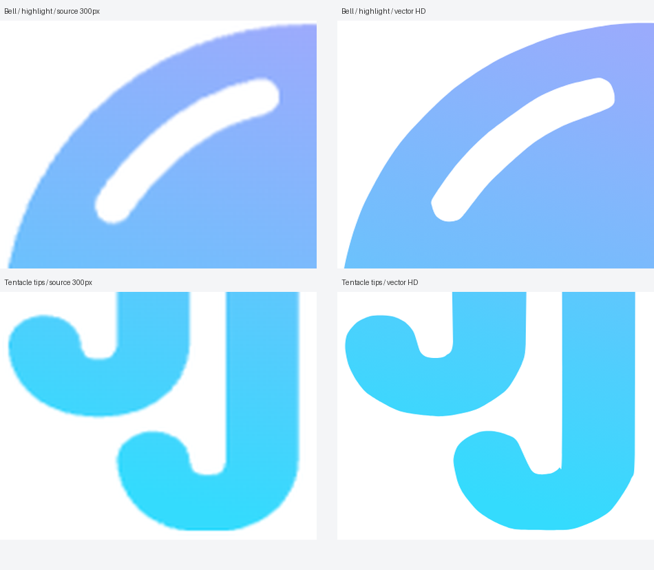

把 300 × 300 的位图描摹为可无限缩放的矢量图形：轮廓亚像素提取、曲线拟合，原图的对角渐变以 16 段色标重建。不是插值放大，边缘在任意尺寸下都由数学曲线重新生成。

| 文件 | 规格 | 用途 |
|---|---|---|
logo-hd.svg | 300 × 300 viewBox · 纯矢量 | 源文件，网页 / 印刷 / 再编辑 |
logo-hd-512.png | 512 × 512 · 透明底 | 常规界面、头像 |
logo-hd-1024.png | 1024 × 1024 · 透明底 | App 图标、商店素材 |
logo-hd-1024-white.png | 1024 × 1024 · 白底 | 与原图观感一致的替换件 |
logo-hd-2048.png | 2048 × 2048 · 透明底 | 高清展示、印刷小样 |
logo-hd-4096.png | 4096 × 4096 · 透明底 | 大幅输出、后续再裁切 |
source-300.png | 300 × 300 · 原图副本 | 对照留档 |
compare-detail.png | 细节并排对比 | 放大质量检查 |
处理方式：先拟合原图的二维渐变场，用红通道反推每个像素的覆盖率，再以亚像素等值线提取轮廓（主体 1 条 + 高光 1 个内孔）；轮廓经去噪、简化后以 Catmull-Rom 三次贝塞尔重建，角点保持直线以避免样条过冲；渐变沿其真实轴向逐段采样为 16 个色标。把 1024 成品回缩到 300 × 300 与原图逐像素比较，平均绝对误差 0.91 / 255。